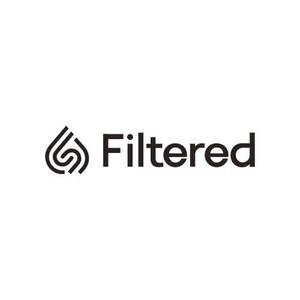

Trade Mark Journal No.2025/009 28 February 2025
UK00004146802 13 January 2025 (11,21,25)

- Class 11
- Water filters; Filters for drinking water; Drinking water (Filters for -); Drinking water filters; Filter boxes for water purification; Water purification filters; Filters for water purifiers; Electrostatic filters for water filtration; Water treatment filters; Filters for water filtering apparatus; Filter elements for the overflows of water supply tanks; Water filtration jugs; Filter elements for the air vents of water supply tanks; Filters for use with apparatus for water supply; Membranes for the filtration of water; Filter apparatus for water supply installations; Water filtering units; Water filtering installations; Water filtering apparatus; Apparatus for water filtering; Apparatus for filtering water; Water filtration apparatus; Water purifiers; Membrane apparatus in the nature of filters for purifying water; Reverse osmosis membrane filters for water treatment; Apparatus for filtering drinking water; Water filtering units for aquariums; Power filters for water purification [other than machines]; Water control valves for water cisterns; Water filtration installations; Filters for wastewater; Membranes for water filtering apparatus; Water purification tanks; Air filters; Water ionizers; Filters for sanitary water distribution apparatus; Water filters for household purposes; Water softeners; Filters for water release devices; Water purifying units for producing potable water; Water intake apparatus; Water treatment apparatus for water purification; Electric water purification filters for household purposes; Water dispensers; Faucet filters; Water filters for industrial purposes; Filters for waste gas purification; Water heaters; Filters for cleaning air; Water taps; Domestic water filtering units; Water sterilisers; Pressure water tanks; Pressure tanks [water]; Water treatment apparatus for water softening; Heaters for wash basin water; Air filter installations; Water coolers; Water faucets; Water treatment units for aerating and circulating water; Water cisterns; Filters for air purifiers; Tap water faucets; Water taps being parts of water supply installations; Strainers for water lines; Flow restrictors for reverse osmosis water purification units; Water faucet spout; Water sterilizers; Heaters for sink water; Taps for water supply; Water fountains; Water immersion heaters; Water filtration bottles sold empty; Aquarium sea water purifying apparatus; Heaters for bath water; Water filtering apparatus for domestic use; Water purifying units; Taps for water pipes; Washers for water taps; Coarse strainers for water screening; Water purifying installations; Installations for purifying water; Drinking water supply apparatus; Water filtering apparatus for industrial use; Air purifiers; Electric air purifiers; Air humidifiers; Industrial air purifiers; Wearable air purifiers; Air purifiers for automobiles; Air purifiers for strollers; Air filters for air conditioning units; Clean air cabinets (Air purification apparatus for -); Air dehumidifiers; Air conditioners; Clean air booths (Air purification apparatus for -); Filters for air conditioning; Air conditioning filters; Filters for air conditioners; Air sterilisers; Air inductor apparatus [air conditioning]; Air purifiers for household use; Separators for purifying air; Air conditioning; Air sterilizers; Air heaters; Portable air conditioners; Air purifying machines; Air purifiers [for household purposes]; Ionizers for the treatment of air; Air humidifiers for automobiles; Room air conditioners; Air purification apparatus; Purification apparatus (Air -); Apparatus for purifying air; Air purifying apparatus; Air purification machines; Purification machines (Air -); Driers (Air -); Air driers; Evaporators for air conditioners; Electric air conditioners; Valves for air conditioners; Air humidifying installations; Germicidal lamps for purifying air; Germicidal lamps for purifying the air; Ionisers for air treatment; Air humidifying apparatus; Filters for use with apparatus for air conditioning; Ionising air guns for the treatment of air; Air purification installations; Air filtration installations; Cyclones [air purifying apparatus]; Electrostatic air filters; Air freshener plug-ins; Robotic air purifiers for household purposes; Heating, ventilating, and air conditioning and purification equipment (ambient); Electric dispensers for air fresheners; Air impellers for ventilation; Air dryers; Air conditioning devices; Extractors [ventilation or air conditioning]; Dryers (Air -); Air deodorizing apparatus; Supply air diffusers; Compressed air ventilators; Air deodorising apparatus; Air curtains; Air freshener dispensing systems; Cyclones [air purifying machines]; Air conditioning apparatus; Air cleansing apparatus; Air cooling apparatus; Air conditioners for automobiles; Air conditioning for use in transportation; Air conditioners for vehicles; Vehicles (Air conditioners for -); Air heating furnaces; Air freshening apparatus; Smoke purifiers; Air recirculating apparatus; Air heating apparatus; Air humidifiers [water containers for central heating radiators]; Air curtains for ventilation; Hot air blowers; Vehicle-mounted air purifying apparatus; Air purifying units for household use; Air cleaning apparatus; Apparatus for cleaning air; Air moisturisers; Air ionization apparatus; Air conditioning installations; Installations for conditioning air; Conditioning air (Installations for -); Installations for air conditioning; Window-mounted air conditioning units; Air circulation apparatus.
- Class 21
- Hair for brushes; Hair brushes; Hair tinting brushes; Hair combs; Shampoo brushes; Electric rotating hair brushes; Large-toothed combs for the hair; Combs for the hair (Large-toothed -); Hot air hair brushes; Electric hair combs; Shaving brushes; Wide tooth combs for hair; Shaving brush stands; Make-up brushes; Eyelash brushes; Mascara brushes; Eyebrow brushes; Brushes; Electrically heated hair brushes; Skin cleansing brushes.
- Class 25
- Clothing; Knitwear [clothing]; Jackets [clothing]; Ready-to-wear clothing; Furs [clothing]; Garments for protecting clothing; Layettes [clothing]; Clothing layettes; Linen clothing; Headbands [clothing]; Headbands for clothing; Gloves [clothing]; Gloves as clothing; Clothes; Aprons [clothing]; Kerchiefs [clothing]; Jerseys [clothing]; Denims [clothing]; Shorts [clothing]; Cashmere clothing; Capes (clothing); Oilskins [clothing]; Gabardines [clothing]; Leather clothing; Clothing of leather; Leather (Clothing of -); Collars [clothing]; Parts of clothing, footwear and headgear; Knitted clothing; Hoods [clothing]; Corsets [clothing, foundation garments]; Embroidered clothing; Wristbands [clothing]; Bandeaux [clothing]; Rainproof clothing; Belts [clothing]; Belts for clothing; Waterproof clothing; Visors [clothing]; Casual clothing; Jackets being sports clothing; Playsuits [clothing]; Stuff jackets [clothing]; Jackets (Stuff -) [clothing]; Clothing for leisure wear; Ready-made clothing; Bottoms [clothing]; Trunks being clothing; Latex clothing; Infant clothing; Drawers [clothing]; Drawers as clothing; Ties [clothing]; Leisure clothing; Clothing for sports; Sports clothing; Athletic clothing; Clothing for children; Muffs [clothing]; Bodies [clothing]; Clothing for babies; Tops [clothing]; Weatherproof clothing; Clothing for cycling; Pockets for clothing; Handwarmers [clothing]; Fabric belts [clothing]; Water-resistant clothing; Clothing for skiing; Beach clothing; Thermal clothing; Chaps (clothing); Men's clothing; Cowls [clothing]; Fishing clothing; Braces for clothing; Mitts [clothing]; Dance clothing; Headbands; Bandanas; Headbands against sweating; Sweatbands; Scarves; Bandannas; Snoods [scarves]; Bandanas [neckerchiefs]; Fascinator hats; Beanie hats; Beanies; Scarfs; Bobble hats; Hats; Head sweatbands; Silk scarves; Shawls and headscarves; Head scarves; Hats (Paper -) [clothing]; Paper hats [clothing].
Filtered Group LLC-FZ